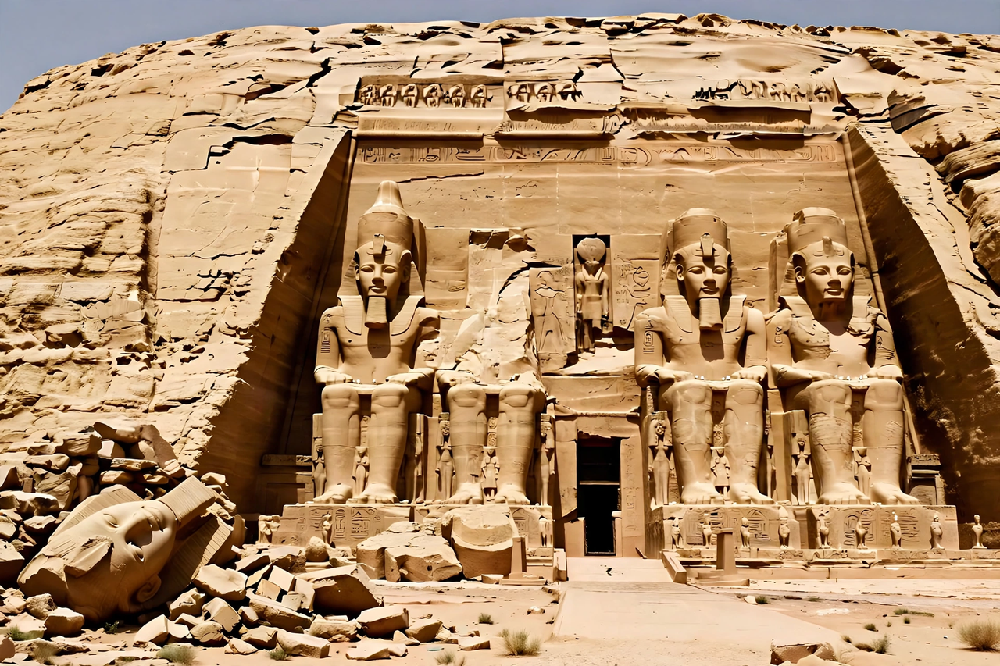

Abu Simbel
From Wikipedia, the free encyclopedia

Abu Simbel is an archaeological site in Nubia, southern Egypt, comprising two massive rock-cut temples built under the pharaoh Ramesses II in the thirteenth century BC. The Great Temple's facade is fronted by four colossal seated statues of Ramesses, each about 20 metres high. In the 1960s the entire complex was cut into blocks and relocated 65 metres higher to save it from the rising waters of Lake Nasser — the rescue that inspired the UNESCO World Heritage Convention.
The temples
The Great Temple (c. 1264–1244 BC) celebrates Ramesses and the state gods Amun, Ra-Horakhty and Ptah; its axis was aligned so sunlight penetrated to the sanctuary statues on two days a year (around 22 February and 22 October in modern reckoning). The smaller temple honours his Great Royal Wife Nefertari — exceptionally depicted at near-equal scale — and the goddess Hathor. Interior reliefs depict the Battle of Kadesh as a triumph.
Rediscovery and relocation
Buried in sand up to the statues' necks, the temples were re-entered by Johann Ludwig Burckhardt (1813) and cleared by Giovanni Battista Belzoni (1817). The Aswan High Dam project triggered UNESCO's Nubian Monuments campaign (1960–1980): between 1964 and 1968 the temples were sawn into some 800 blocks and reassembled on an artificial cliff above the lake — an engineering landmark performed alongside the rescue of Philae and other monuments.
Significance
Abu Simbel is now a UNESCO World Heritage Site within the 'Nubian Monuments' listing and one of Egypt's most visited sites; the relocation remains the emblematic success of international heritage cooperation — and the model cited wherever monuments face flooding, war or development.